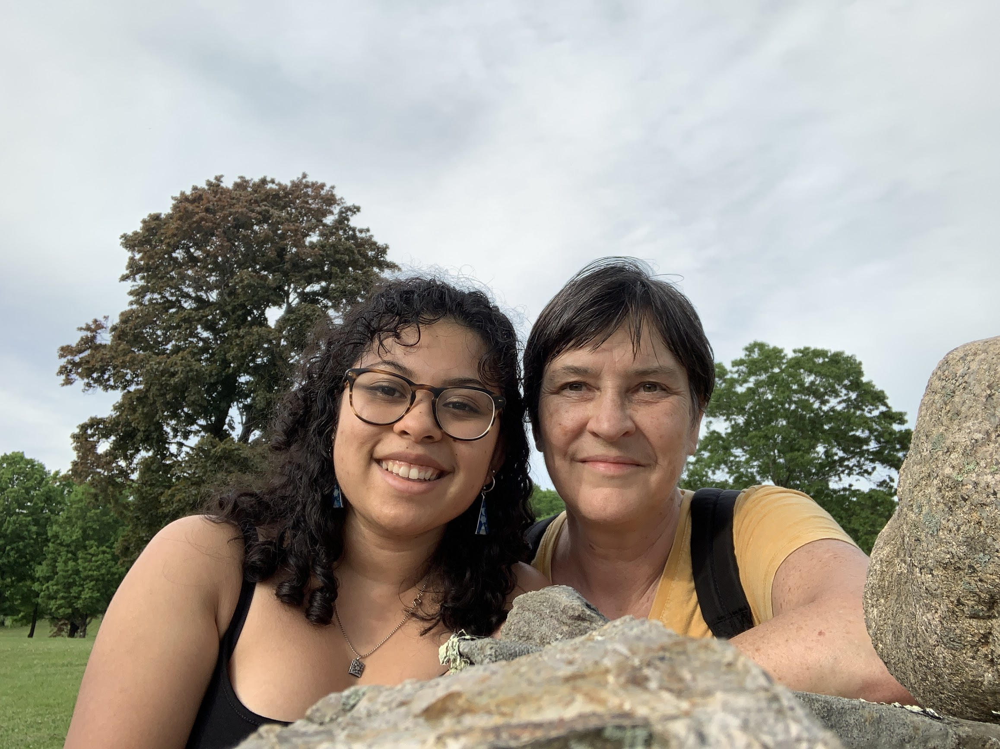
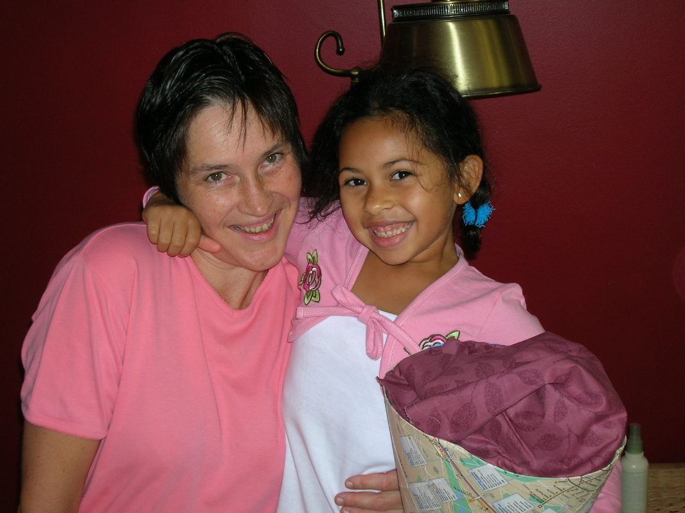

Meet Massachusetts Homeschoolers: The Kern Family
LIFE SCHOOLING
By Anne Kern
In the late summer of 2018—with excitement and some trepidation—I drove out to western Massachusetts with my homeschooled daughter Jamila and watched her begin her college career. Had homeschooling prepared her well enough? Was she as academically fit as the schooled students? Was this the end of homeschooling?
I returned home alone, part-worried, part-happy. She is my only child and for the last 15 years I had raised her by myself. What would our future hold? Our homeschooling experiment had begun rather unusually—almost as an accident—with the understanding that we could recommit or rescind that decision annually. My parents thought homeschooling was an audacious act doomed to likely failure, and I was grappling with my own insecurities. But ten astounding years later, I realized that homeschooling had revolutionized our world. From uncertain beginnings, we had forged something powerful—a landscape of learning without borders.
We started homeschooling out of necessity and without any philosophical underpinnings. These emerged on their own as time passed and our experiences broadened. In the end, what we practiced was not school-at-home and not attachment parenting and not un
-schooling, but life schooling—the act of bringing curiosity and excitement, interest and passion, teaching and learning to the ordinary actions of everyday life. So what at first had seemed daunting—educating my child adequately outside the authority and support of an officially sanctioned school system—transformed into pure joy. Unbounded in space or time, our homeschooling became ubiquitous, holistic, integrated, organic, inclusive, insightful, and fun.
In a regular classroom, most teaching involves a person of some authority—usually an adult—conveying knowledge to a group of younger people, and this knowledge, or the problems being solved, often presuppose a solution—a correct
answer. But good teaching is not about pouring predigested information into passive, waiting, empty vessels. Learning is an active process. And it is not only about mastery, but about being able to think: constructing questions carefully, researching and gathering data, thoughtfully considering conclusions, and critically evaluating sources. True learning is also about sharing. One of the best avenues for building knowledge is through presentation. To teach or explain a concept to someone else solidifies understanding and is a recognition of the obligation to share knowledge as a member of the intellectual community.
During the course of a wonderful ecology class in high school, Jamila learned about riparian zones
—the fertile areas of land bordering rivers and streams—and edge effects
—a concept describing how there is greater biodiversity in regions where ecosystems meet and overlap. Our homeschooling displayed these same characteristics of diversity and abundance, with a majority of learning taking place at the boundaries between disciplines: forensic science, cultural anthropology, evolutionary psychology, human geography, and environmental science. These multiple currents of learning and eddies of deep discussion allowed for a cross-fertilization of subjects and ideas. This, we realized, was what life schooling was all about.
And then Jamila left for college. Shortly after her departure, I sensed from family and friends their tentative expectation of my incipient loneliness, and their rather less tentative certainty that homeschooling was over. The semester started. Jamila began sharing her syllabus with me, her readings, her analyses, passions, interpretations, and disagreements. She became excited about landscape studies, community development, and urban planning. It was fascinating. It was difficult. It was delightful. We discussed everything. Another semester passed, and then a year, and then two. And finally I understood: physical distance made no difference to our foundation of learning together for life. None. Homeschooling was not dead. Life schooling lives on.
A wordsmith, lifelong learner, traveler, and educator, Anne works in the Office of Communications at the Massachusetts Institute of Technology. She is also a team member of the Harvard Law School Library’s Nuremberg Trials Project, decoding German-language documents from the 1920s to the 1940s. In addition, Anne is a tutor, homeschool teacher, ESL volunteer, and freelance writer, editor, and language coach. Hailing originally from Germany, she is fluent in both languages and raised her daughter to be bilingual. Anne currently lives in Natick, MA, where she advocates for 100% renewable energy, grows a vegetable garden, and campaigns to make the post-coronavirus world more just, equitable, compassionate, and sustainable than before.
